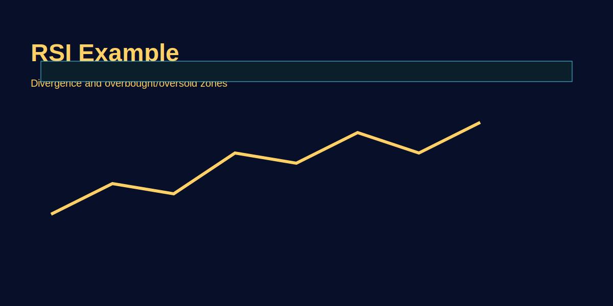

RSI Explained Properly
Problem-based introduction
RSI bahut popular oscillator hai, lekin log misuse karte hain. Yeh article simple rules, divergence use, and GOLD examples batata hai for better decision-making.
Step-by-step explanation
- Understand default scale (0–100) and typical thresholds (30/70).
- Use RSI divergence as confirmation, not sole trigger.
- Adjust period for instrument—shorter for faster signals, longer for noise reduction.
Real trading logic (GOLD example)
On XAU/USD, a bullish divergence on RSI on 4H near major support can give a high-probability long when higher timeframe trend aligns; use stop under swing low.
Image-based examples (mandatory)
Example shows bearish and bullish divergence on GOLD chart with annotations.
Common Mistakes
- Blindly buying/selling when RSI crosses thresholds without context.
- Using multiple conflicting RSI timeframes without a clear plan.
Pro Tips
- Use divergence plus structure (support/resistance) for better reliability.
- Backtest RSI parameters for your instrument and timeframe.
Risk Warning
RSI signals can fail in trending markets—size accordingly and use stops.
SEO FAQs
- 1. RSI divergence kya hota hai?
- Price makes a higher high while RSI makes a lower high (bearish), or price lower low with higher low on RSI (bullish).
- 2. RSI thresholds kab change karein?
- For volatile instruments, adjust to 20/80 for fewer false signals; always test before using live.